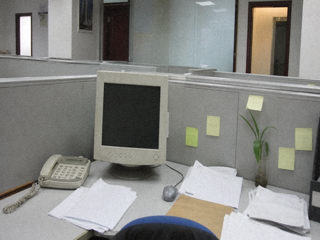

狄厚假条

狄厚。回乡办丧。十八日走，二十五日前回。丧事不是演出的事，别写成别的。
检场钥匙放西厢第二屉。程石代管。代管不等于代应工。应工要人顶。
假条不写中邪，不写冲撞。写了也不准贴。贴了班主撕。
游客不要给狄厚打电话。号码在假条上，假条不上网。上网的只有公示摘要。
本页只能证明他请假。不能证明今晚谁顶检场。顶的人在应工簿临时栏。

狄厚。回乡办丧。十八日走，二十五日前回。丧事不是演出的事，别写成别的。
检场钥匙放西厢第二屉。程石代管。代管不等于代应工。应工要人顶。
假条不写中邪，不写冲撞。写了也不准贴。贴了班主撕。
游客不要给狄厚打电话。号码在假条上，假条不上网。上网的只有公示摘要。
本页只能证明他请假。不能证明今晚谁顶检场。顶的人在应工簿临时栏。
抄件
狄厚假条抄件。原件蓝圆珠笔，程石在右下角画了个圈，没签名。圈算批。批完入西厢第二屉。网上公示只挂摘要，摘要没有住址，没有第二个号。
狄厚。回乡办丧。十八日走，二十五日前回。丧事不是演出的事，别写成别的。假条不写中邪，不写冲撞。写了也不准贴。贴了班主撕。检场钥匙放西厢第二屉。程石代管。代管不等于代应工。应工要人顶。顶的人在应工簿临时栏，不在这张假条上。这张假条只能证明他请假。不能证明今晚谁顶检场。游客不要给狄厚打电话。号码在假条上，假条不上网。上网的只有公示摘要。打了也是他弟弟狄山接，狄山在河湾村办丧，不看戏，也说不清检场是干什么的。假条用的是团里那种大方格纸，方格纸原来是给小学开家长会用的，哪年剩的没人记得。剩的纸当假条，当过请假，当过领蜡。蜡还在第三屉。第三屉今晚不用。今晚缺的是人，不是蜡。人缺了开锣仍要齐。齐的办法不在假条里。假条里只有走和回的日子。日子到了人没回，公示不改。不改就还是告假。告假不是除名。大方格纸抬头还印着「学生家长通知」，通知两个字被程石用圆珠笔划了，划了当假条用。当了也不换纸。换纸要跑县里，油费比纸贵。贵了就用这叠。这叠还厚。告假的人不多。狄厚这张也占一页。一页只证明请假。谁顶，看簿。